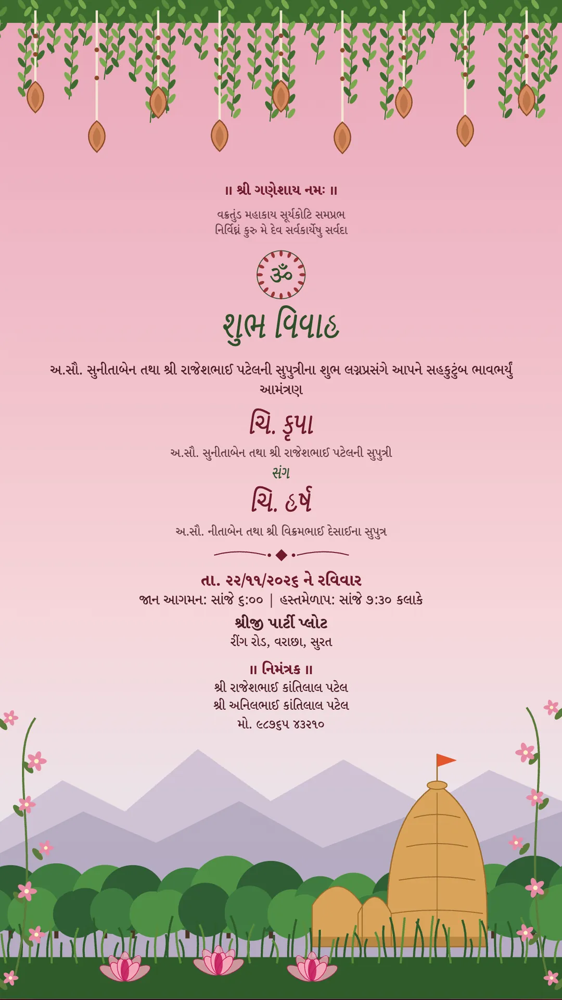
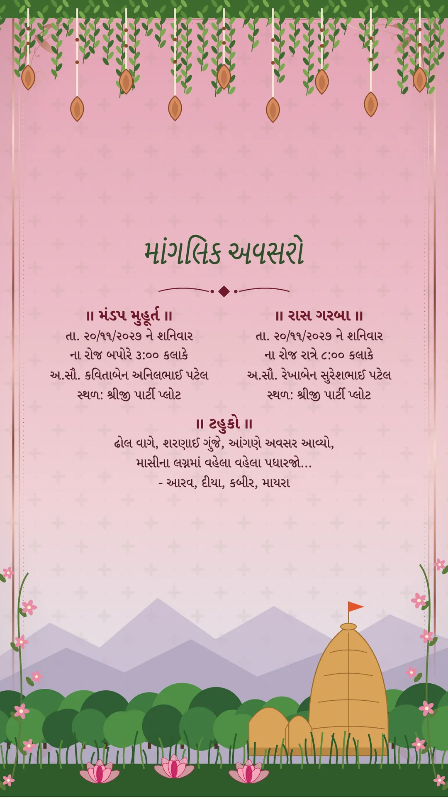
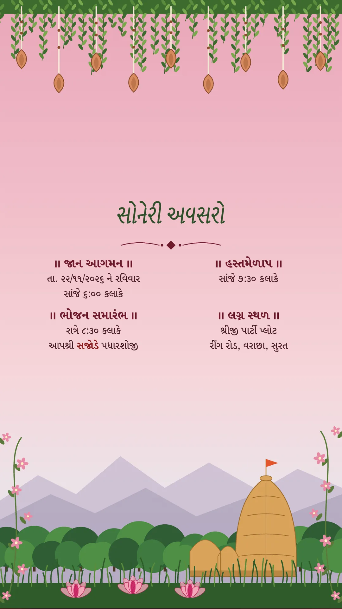
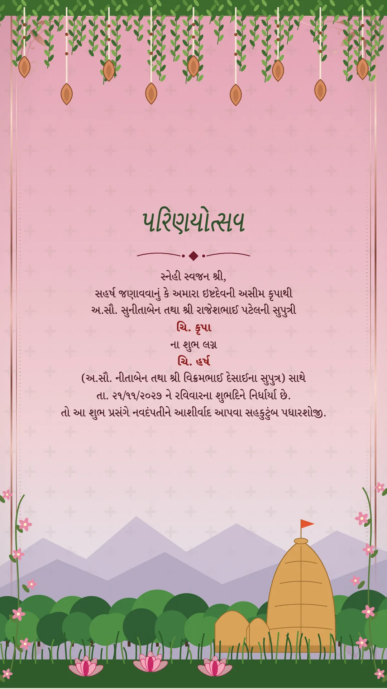
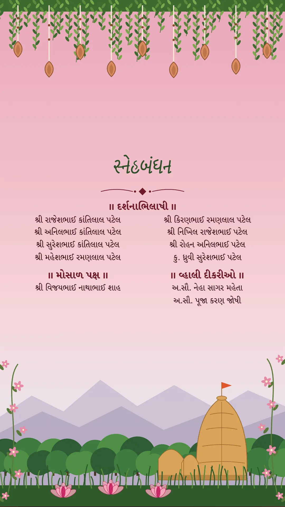
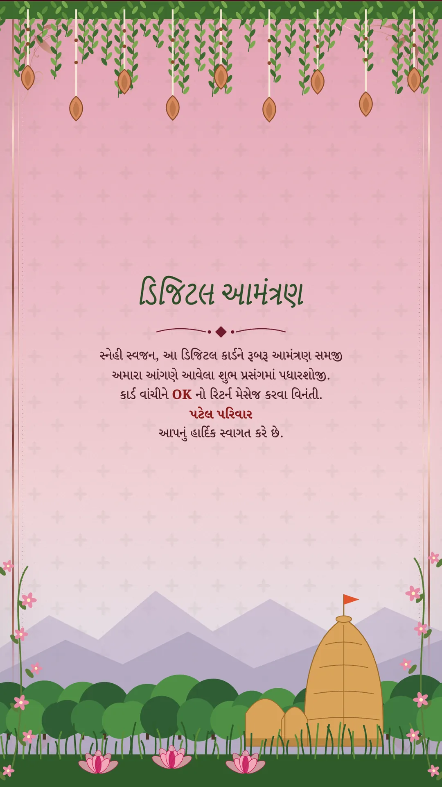

Designs › Wedding (Vivah) › Gulabi Kankotri
Gulabi Kankotri: Gujarati wedding card

- Ceremony: Wedding (Vivah)
- Language: Gujarati
- God or sacred symbol: Lord Ganesha
- Format: WhatsApp image (1080 x 1920 px) and 5 x 7 inch print PDF
- Pages: 6 (cover, functions, wedding-day programme, letter, family names, closing message)
About this design
Gulabi means pink, and the whole card is a gradient from rose at the top to a pale lilac grey at the bottom. A curtain of green vines hangs along the top edge, with small brown buds on threads between them. At the bottom is a drawn landscape: two layers of lilac hills, a row of round green trees, a golden temple shikhar with a saffron flag on the right, a strip of grass, three pink lotuses along the base, and flowering vines climbing both side edges.
The text follows the order of a printed kankotri: ॥ શ્રી ગણેશાય નમઃ ॥ in maroon, the Vakratunda shlok in small type, a small Om emblem, then શુભ વિવાહ in large dark green letters. The names are in maroon, larger than the rest, with the parents' lines in small muted type under each, followed by the date, the jaan and hastmelap times, the venue and the નિમંત્રક block. Headings and names use the Farsan face and the body uses Noto Serif Gujarati.
It suits Gujarati Hindu families who want the full six-page kankotri, with the functions, the wedding-day programme, the letter, the family names and the ટહુકો from the children, in a lighter style than the usual red and gold. The artwork is drawn rather than painted, so it stays sharp on the 5 by 7 inch print card as well as on a phone.
Compared with Sandhya Pink Dusk Kankotri, which shares the pink palette, Gulabi has no painted gods on any page, so the only religious lines are the ones in the text, and you can change or remove them. Jain families should look at Jain Lagna Patrika Saffron instead.
All 6 pages
The cover is shown above. These are the other pages exactly as the card opens in the editor, with the sample family names.





Sample wording on this card
The cover opens in the editor with this text. Change any line, or switch the card to another language.
॥ શ્રી ગણેશાય નમઃ ॥
વક્રતુંડ મહાકાય સૂર્યકોટિ સમપ્રભ
નિર્વિઘ્નં કુરુ મે દેવ સર્વકાર્યેષુ સર્વદા
શુભ વિવાહ
અ.સૌ. સુનીતાબેન તથા શ્રી રાજેશભાઈ પટેલની સુપુત્રીના શુભ લગ્નપ્રસંગે આપને સહકુટુંબ ભાવભર્યું આમંત્રણ
ચિ. કૃપા
અ.સૌ. સુનીતાબેન તથા શ્રી રાજેશભાઈ પટેલની સુપુત્રી
સંગ
ચિ. હર્ષ
અ.સૌ. નીતાબેન તથા શ્રી વિક્રમભાઈ દેસાઈના સુપુત્ર
તા. ૨૨/૧૧/૨૦૨૬ ને રવિવાર
જાન આગમન: સાંજે ૬:૦૦ | હસ્તમેળાપ: સાંજે ૭:૩૦ કલાકે
શ્રીજી પાર્ટી પ્લોટ
રીંગ રોડ, વરાછા, સુરત
નિમંત્રક
શ્રી રાજેશભાઈ કાંતિલાલ પટેલ
શ્રી અનિલભાઈ કાંતિલાલ પટેલ
મો. ૯૮૭૬૫ ૪૩૨૧૦
The other five pages are માંગલિક અવસરો (the functions before the wedding), સોનેરી અવસરો (the wedding-day programme), પરિણયોત્સવ (the letter), સ્નેહબંધન (the family names) and ડિજિટલ આમંત્રણ (the closing message).